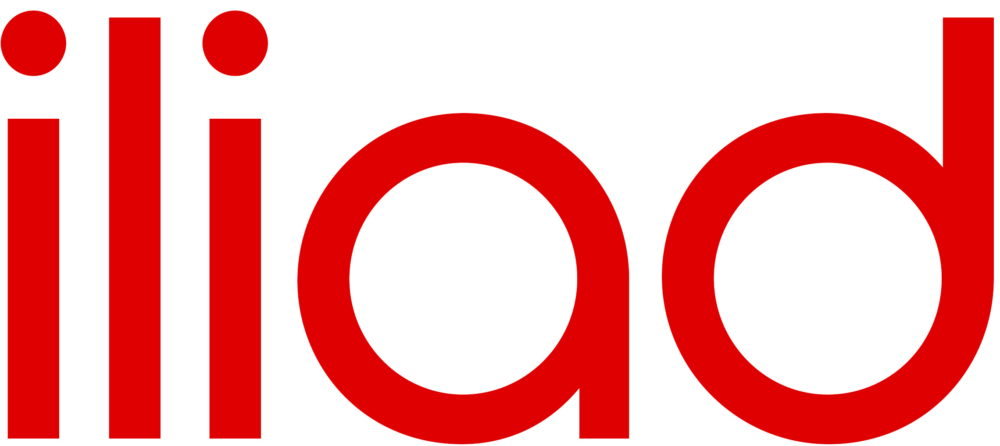

Free : Économie
En 2022, Free, filiale du groupe Iliad, a connu une année exceptionnelle sur le plan financier. Son chiffre d'affaires consolidé a atteint 8,37 milliards d'euros, enregistrant une croissance de 10,3 % par rapport à l'année précédente. Cette croissance significative est due à la performance exceptionnelle de Free sur ses marchés

En 2022, Free a réalisé un bénéfice net en hausse de 44,1 %, atteignant 758 millions d'euros.
Quant au chiffre d'affaires, il a progressé de 10,3% sur un an pour atteindre 8,37 milliards d'euros en mars 2023.
Mais c'est surtout sur les recrutements de nouveaux abonnés dont Free se félicite puisque au total l'entreprise a gagné 2,7 millions d'abonnés sur le fixe et le mobile en France, en Italie et en Pologne, ce qui fait de l'opérateur « le 6e opérateur européen en termes de taille avec 46 millions d'abonnés ».
Ces résultats solides démontre ainsi une performance financière solide malgré les défis économiques mondiaux causés par la pandémie de COVID-19.
Cette rentabilité est attribuée à une gestion efficace des coûts et à une stratégie d'expansion bien exécutée. L'entreprise a également souligné sa position en tant que leader des recrutements de nouveaux abonnés en France pour les services fixes et mobiles.